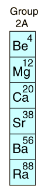

|
 | Alkaline Earths
Group II of the Periodic Table is composed of reactive metals which tend to lose two electrons, forming positive ions with two positive charges. Compounds of alkaline earths comprise many common minerals such as calcium carbonate, magnesite, and gypsum. Early chemists found these compounds, which did not melt or change when exposed to fire, and called them "earths", considering them to be elemental forms. The pure elements can be separated by heating, but do not occur in nature in pure form.
Like the alkali metals Na and K, the ions of Ca and Mg are important in biological systems as electrolytes. Calcium phosphates form bones and teeth. Magnesium is a key component in chlorophyll, the molecule in green plants which helps transform sunlight and carbon dioxide into water and sugar.
|